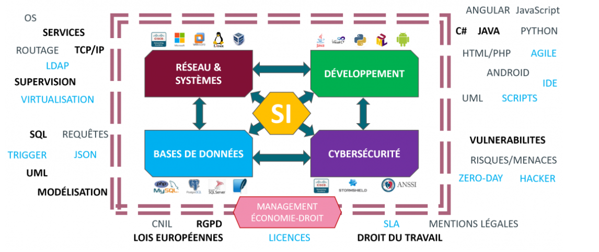

Porte Folio

Babinot Arthur
Porte Folio
Babinot Arthur

Le BTS SIO est un diplôme national en informatique de niveau bac+2.
Il peut être préparé gratuitement en deux ans dans quelque 130 lycées publics ou privés sous contrat présents sur tout le territoire français.
Il est aussi proposé par des établissements privés sous contrat d’association avec l’état ou non.
A l’issue de cette formation on peut intervenir en entreprise en tant que développeur d’applications informatiques ou administrateur de réseaux locaux.
Y a t-il un emploi à l’issue de la formation ?
Comme pour tous les diplômes cela dépend aussi de vous, de votre motivation et de votre implication dans la formation.
Les périodes de stages ou l’apprentissage sont évidemment déterminantes pour faire valoir ses compétences auprès des employeurs.
Le développement très rapide de l’économie numérique implique que les besoins en compétences informatiques sont très importants.
Qu’est-ce que l’option SLAM ?
L’option SLAM est destinée aux étudiants qui s’orientent vers les métiers liés à la conception et la maintenance de programmes applicatifs.
Grâce à des cours spécifiques, les diplômés seront capables de gérer un parc informatique ou d’administrer un réseau au sein d’une entreprise.
Ils pourront également gérer l’intégration, la sécurisation et la configuration des serveurs, mais aussi des postes clients et des équipements d’interconnexion.
Qu’est-ce que l’option SISR ?
L’option SISR est destinée aux étudiants qui s’orientent vers les métiers liés à la conception et la maintenance d’infrastructures réseaux.
Assurer la sécurité, la maintenance et l’installation des réseaux et des équipements informatiques font partie des principales missions des futurs administrateurs, techniciens ou pilotes d’exploitation.
Comme pour l’autre option, des cours plus généraux viendront compléter la formation et apporter des compétences plus généralistes, permettant ainsi aux diplômés d’être opérationnels dans n’importe quelle entreprise.
Un résumer en image
